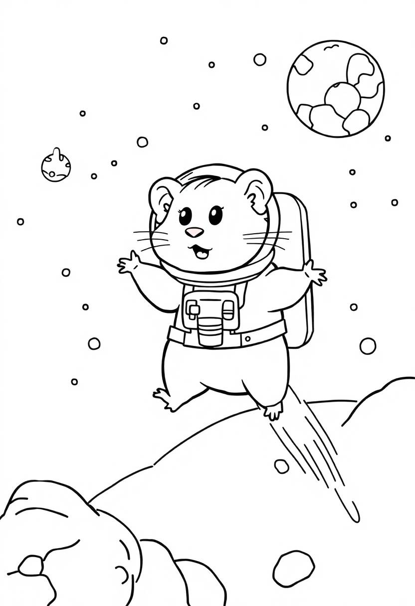
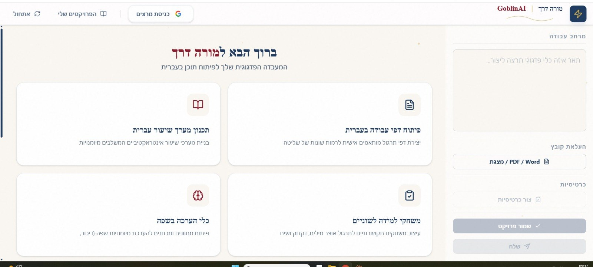

כלים מעשיים לניסיון
כלים אינטראקטיביים שמדגימים שימושים אמיתיים של בינה מלאכותית בחינוך ובחיי היומיום.
הגלאי לתרמיות
כלי מבוסס בינה מלאכותית לזיהוי והימנעות מהונאות — מצוין ללימוד בטיחות דיגיטלית וחשיבה ביקורתית.
- לימוד זיהוי הודעות חשודות
- הבנת שיטות הונאה נפוצות
- בניית מודעות לבטיחות דיגיטלית

יוצר דפי צביעה
יצירת דפי צביעה מותאמים אישית באמצעות בינה מלאכותית — כלי נהדר ללמידה יצירתית ולעניין תלמידים צעירים.
- יצירת חומרי למידה אישיים
- מעורבות יצירתית של תלמידים
- חקר אמנות בסיוע בינה מלאכותית
עוזר הנחיות (Prompt Assistant)
לימוד אמנות כתיבת ההנחיות — כיצד לתקשר ביעילות עם כלי בינה מלאכותית כדי לקבל תוצאות טובות יותר.
- בניית הנחיות אפקטיביות
- שיפור מיומנויות אינטראקציה עם AI
- מיצוי הפוטנציאל של כלי הבינה המלאכותית

"מורה דרך" — אפליקציה למורי עברית כשפה שנייה
אפליקציה שאני מפתח בימים אלה, מיועדת לסייע למורי עברית כשפה שנייה בתכנון שיעורים ובהפקת תוצרים לימודיים בעזרת Gemini. פותחה ב-Google AI Studio — כלי חינמי וידידותי המאפשר לבנות אב-טיפוס חכם גם בלי ידע בקוד. עדיין בפיתוח, אך כבר מאפשרת שמירת פרויקטים, בניית מערכי שיעור, עיבוד וניקוד טקסטים, יצירת דפי עבודה, משחקי לשון ובניית הערכה.
- בניית מערכי שיעור ותוצרים לימודיים
- עיבוד טקסטים והוספת ניקוד
- דפי עבודה ומשחקי לשון
סרטוני הדגמה
שני סרטונים קצרים שמדגימים שימוש מעשי בכלי בינה מלאכותית.
הדגמת שימוש ב-NotebookLM
בניית מצגות עם Gemini